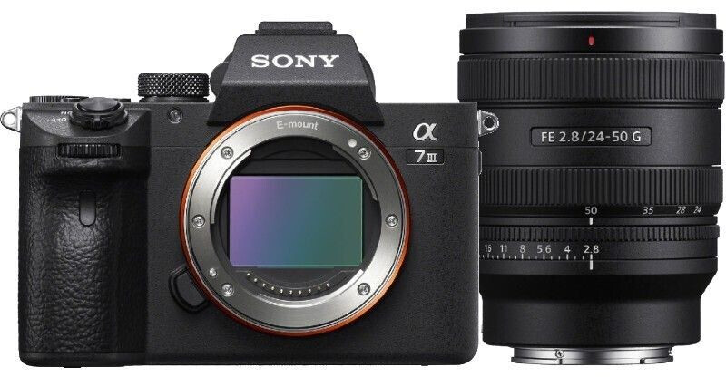

Alpha 7V — Full‑frame Mirrorless Interchangeable Lens Camera
Sony’s next-generation full-frame mirrorless camera featuring upgraded autofocus, improved video recording capabilities, advanced image processing, and excellent low-light performance aimed at photographers and professional content creators, delivering premium image quality and strong hybrid shooting performance, with an estimated Botswana price of P45,000–P60,000.
A versatile full‑frame camera offering exceptional autofocus, dynamic range, and low‑light performance.
Alpha 7R V — Full‑frame Mirrorless Interchangeable Lens Camera
high-resolution full-frame mirrorless camera featuring a 61MP sensor, advanced AI autofocus system, 8K video recording, and exceptional detail reproduction, making it ideal for professional photography, studio work, landscapes, and commercial content creation, with an estimated Botswana price of P65,000–P85,000 in Botswana.
Built for detail‑focused creators with a high‑resolution sensor and advanced AI‑powered autofocus.
Alpha 7 IV — 33MP, 10FPS, 4K/60p Full‑frame Camera
a versatile full-frame mirrorless camera equipped with a 33MP sensor, powerful autofocus, 4K video recording, and excellent low-light performance, making it highly popular among photographers, videographers, and hybrid content creators who require balanced professional performance, with an estimated Botswana price of P40,000–P55,000.
A hybrid powerhouse offering excellent stills and 4K video performance for creators.
Alpha 7C II — Full‑frame Mirrorless Hybrid Camera
a compact full-frame mirrorless camera that combines portability with strong performance by featuring a 33MP sensor, advanced autofocus, and high-quality 4K video recording, making it suitable for travel photography, vlogging, and everyday professional content creation, with an estimated Botswana price of P38,000–P50,000.
Compact yet powerful, ideal for travel, vlogging, and everyday professional shooting.
Alpha 1 II — Full‑frame Mirrorless Interchangeable Lens Camera
Sony’s ultra-premium flagship mirrorless camera designed for professionals, featuring extremely high-resolution imaging, ultra-fast burst shooting, advanced autofocus tracking, and professional 8K video capabilities, making it ideal for sports, wildlife, commercial, and cinematic production work, with an estimated Botswana price of P110,000–P150,000.
Flagship performance with ultra‑high resolution, fast burst shooting, and 8K video.

Alpha 7 III — 24.2MP, 10FPS, 4K/30p Full‑frame Camera
a widely respected full-frame mirrorless camera known for its excellent balance of performance, image quality, autofocus, battery life, and affordability, featuring a 24MP sensor and strong low-light capabilities suitable for photography and video production, with an estimated Botswana price of P25,000–P35,000.
A balanced full‑frame camera known for reliability, speed, and excellent image quality.
Alpha 7CR — Full‑frame Mirrorless Hybrid Camera
a compact high-resolution full-frame mirrorless camera featuring a 61MP sensor, advanced autofocus, and lightweight design that delivers professional-level image quality in a portable body suitable for travel, street, and professional photography, with an estimated Botswana price of P55,000–P70,000.
A compact high‑resolution camera designed for creators who need portability and detail.
Alpha 9 III — Full‑frame Mirrorless Interchangeable Lens Camera
a high-speed professional mirrorless camera featuring a groundbreaking global shutter sensor, ultra-fast continuous shooting, advanced autofocus tracking, and exceptional performance for sports, wildlife, and action photography, making it one of Sony’s most advanced professional cameras, with an estimated Botswana price of P95,000–P130,000.
Revolutionary global shutter sensor enabling distortion‑free action photography.
Alpha ZV‑E10 II — APS‑C Mirrorless Content Creator Camera
a compact APS-C mirrorless camera designed mainly for vloggers and content creators, featuring improved autofocus, strong video quality, interchangeable lenses, and user-friendly controls for streaming, YouTube creation, and social media production, with an estimated Botswana price of P18,000–P28,000 in Botswana.
Designed for vloggers with fast autofocus, high‑quality video, and intuitive controls.

 (Sold without manufacturer warranty), Black.jpeg)
 94148573106 _ eBay.jpeg)


.jpeg)